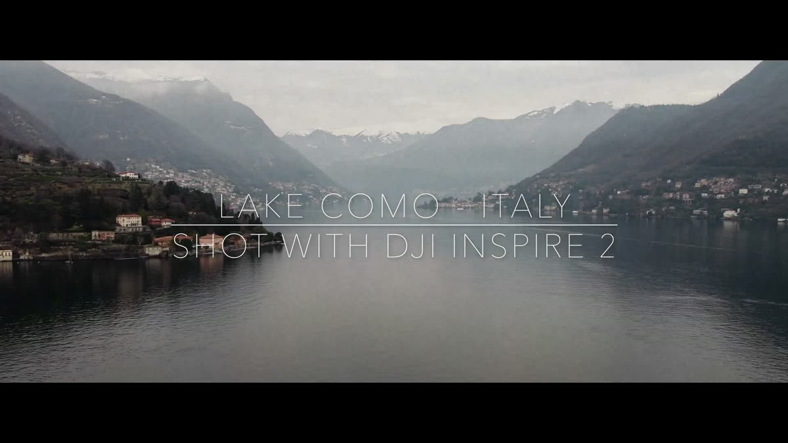
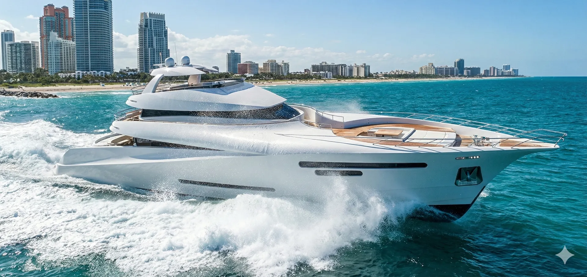
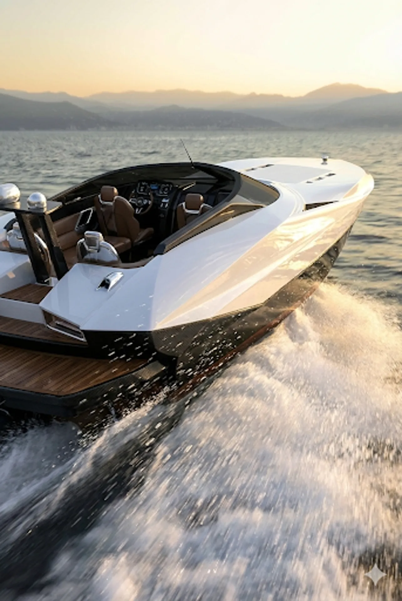
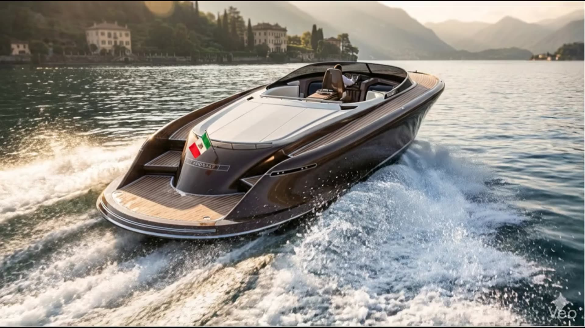
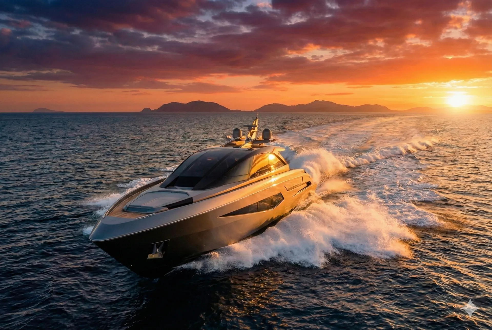

03 / Como e la Dolcevita
Como e la Dolcevita
The Italian Art of Living
Il Lario e l'arte di vivere. Lake Como, its timeless villas and the pleasure of life beautifully lived on the water.

Il Lario
Il Lario
Where water, architecture and landscape meet.
Il Lario has its own rhythm. Mountains fall steeply towards the water, villages gather around little harbours, and the changing light transforms the landscape throughout the day. This is a place best understood slowly, sometimes from the shore and sometimes from the deck of a boat.
FONTE STORICA · Regione Lombardia · Lake ComoLe Ville
Le Ville
Architecture in harmony with its setting.
The great villas of Como were designed to be experienced within their setting, not separated from it. At Villa del Balbianello, on the wooded Lavedo peninsula, architecture, terraces and gardens form an extraordinary composition above the lake. Its history belongs to those who created and preserved it; its sense of proportion offers a lasting lesson in elegance.
FONTE STORICA · FAI · Villa del Balbianello
Il Tempo
Il Tempo
The luxury of taking the longer way home.
Il tempo is perhaps the greatest luxury. The freedom to follow the light, stay for one more conversation or choose the longer route home. In the Italian understanding of la dolce vita, time is not simply spent: it is enjoyed, generously and beautifully.

L'arte dell'approdo
L'Arte dell'Approdo
The pleasure of arriving by water.
There is a particular pleasure in the approach: a distant villa becomes a recognisable silhouette, a stone pontile appears, and a familiar shore reveals itself differently from the water. L'arte dell'approdo—the art of arriving—is part of the life and character of Como.
Como e la Dolcevita / 05
Il Piacere di Navigare
The Joy of the Journey
The pleasure of a passeggiata on the water has little to do with distance. It is the changing view, the sound of the lake and the quiet sense of being exactly where one wants to be. Il piacere di navigare belongs to the experience, not to a number on a specification sheet.

Sprezzatura
Eleganza Senza Ostentazione
Effortless Italian elegance, never ostentation.
Eleganza senza ostentazione. True Italian elegance does not need to announce itself. It lives in proportion, hospitality, a confident gesture and the art of choosing just enough. A beautiful boat should share that same natural sprezzatura: a sense of ease made possible by careful thought.

La Vita a Bordo
La Vita a Bordo
Moments worth keeping.
La vita a bordo begins with the people who share it. A quiet corner in the sun, the pleasure of an aperitivo, space for conversation and the freedom to be alone when desired. These moments give direction to a design long before its final arrangements are defined.
Como e la Dolcevita / 08
Tradizione Nautica
Como's relationship with boats reaches far beyond leisure. Workboats, sailing craft, passenger vessels, racing machines and classic motorboats have all left their mark on its shores. The Museo Barca Lariana at Pianello del Lario preserves a remarkable record of this culture, making the lake's boating history tangible through vessels, engines, documents and stories.
FONTE STORICA Museo Barca LarianaComo e la Dolcevita / 09
La Nostra Ispirazione
The past is not a template to reproduce. It is a standard to understand. Inspired by Como's landscape, architecture and boating culture, VELLARIO aims to develop a contemporary design identity that feels at ease beside what has endured: unmistakably new, yet sensitive to the spirit of the place.
Como e la Dolcevita / 10
La Collezione
The Pleasure of Discovery
A collection is an expression of character, not simply of size or category. The eight VELLARIO design studies are different invitations to experience the water. Discover the distinct intentions behind Quantum 999, MAS 36, MAS 52, MAS 56, Lariocab, FY70, GranTender 72 and Gran Marlin.
ESPLORA CollezioneVELLARIO · COMO / CELLART-INSPIRED EDITORIAL
Un lago.
Un modo
di vivere.
Como non è soltanto un luogo. È un'idea di bellezza, fatta di proporzioni, silenzio e incontri indimenticabili.

VELLARIO / ARCHIVIO VISIVO
Incontri sull’acqua
ORIGINAL DESIGN STUDIES · NON PRODUZIONE VELLARIO
Gran MarlinDESIGN STUDY · ORIGINAL ARCHIVE Gran MarlinIL FILM · DESIGN STUDY
Gran MarlinIL FILM · DESIGN STUDY
GranTender 72DESIGN STUDY · ORIGINAL ARCHIVE GranTender 72IL FILM · DESIGN STUDY
GranTender 72IL FILM · DESIGN STUDY MAS 52DESIGN STUDY · ORIGINAL ARCHIVE
MAS 52DESIGN STUDY · ORIGINAL ARCHIVE
MAS 52IL FILM · DESIGN STUDY
FY70DESIGN STUDY · ORIGINAL ARCHIVE FY70IL FILM · DESIGN STUDY
FY70IL FILM · DESIGN STUDY MAS 36DESIGN STUDY · ORIGINAL ARCHIVE
MAS 36DESIGN STUDY · ORIGINAL ARCHIVE MAS 36IL FILM · DESIGN STUDY
MAS 36IL FILM · DESIGN STUDY